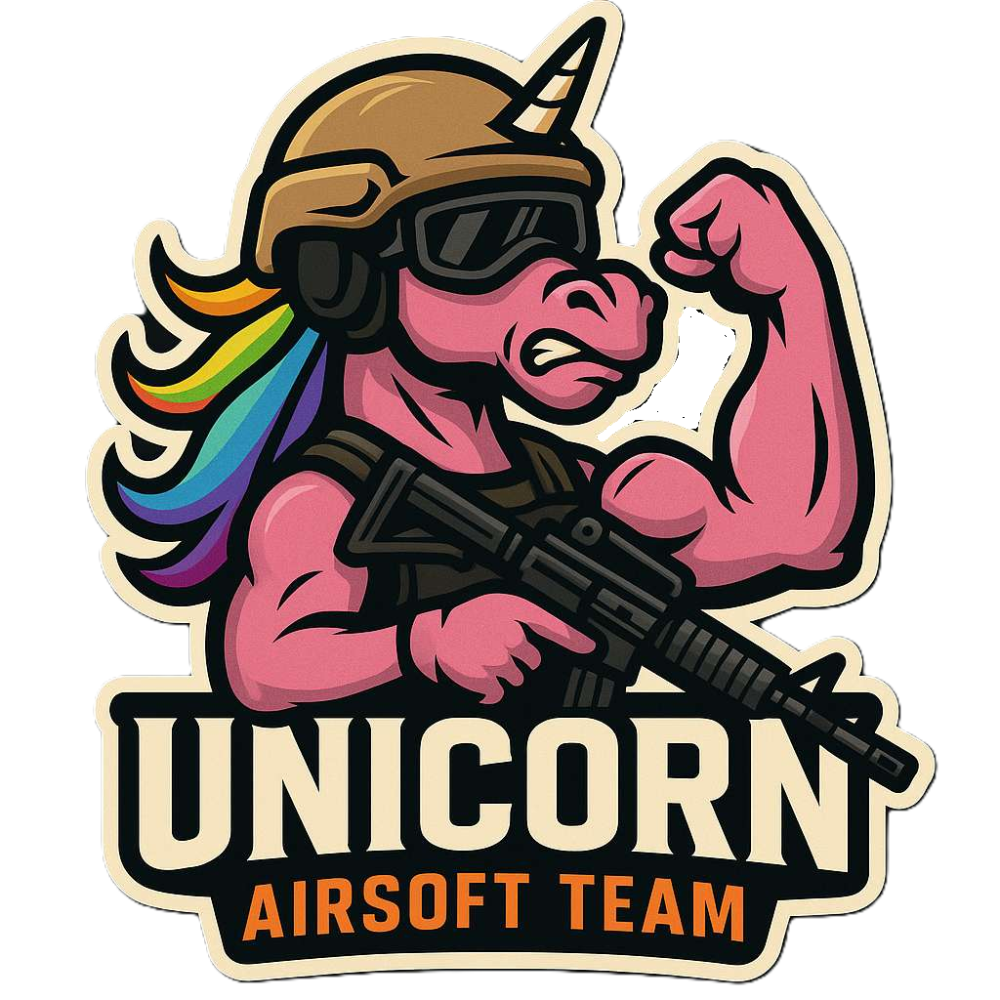
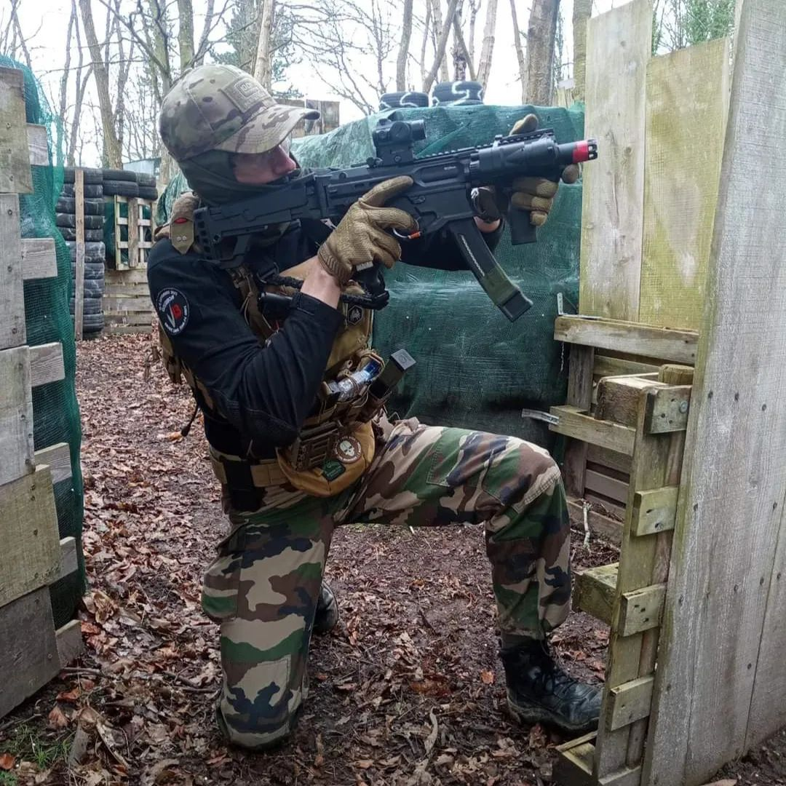

🦄 Unicorn Airsoft Hérault
Bienvenue chez Unicorn Airsoft, une équipe passionnée basée dans le département de l’Hérault (34) ! Nous sommes un groupe de joueuses et joueurs unis par la même envie : partager de bons moments, du fair-play et de l’adrénaline autour de l’airsoft, dans une ambiance conviviale et respectueuse.
Nos parties se déroulent sur différents terrains de la région
L’esprit Unicorn ?
Respect, entraide et bonne humeur avant tout.
Des scénarios variés (milsim, fun game, capture de drapeau, zombie, etc.).
Un groupe ouvert à toutes et à tous, sans prise de tête.

Parties à venir
| Partie Programmée | |
|---|---|
| Date : | Aucune |
| Lieu : | Aucun |
| Places : | Aucune |
| Partie Programmée | |
|---|---|
| Date : | Aucune |
| Lieu : | Aucun |
| Places : | Aucune |